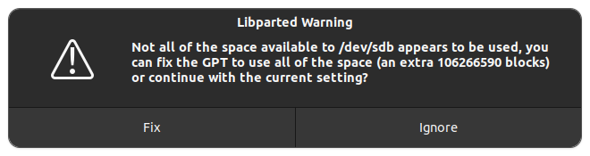
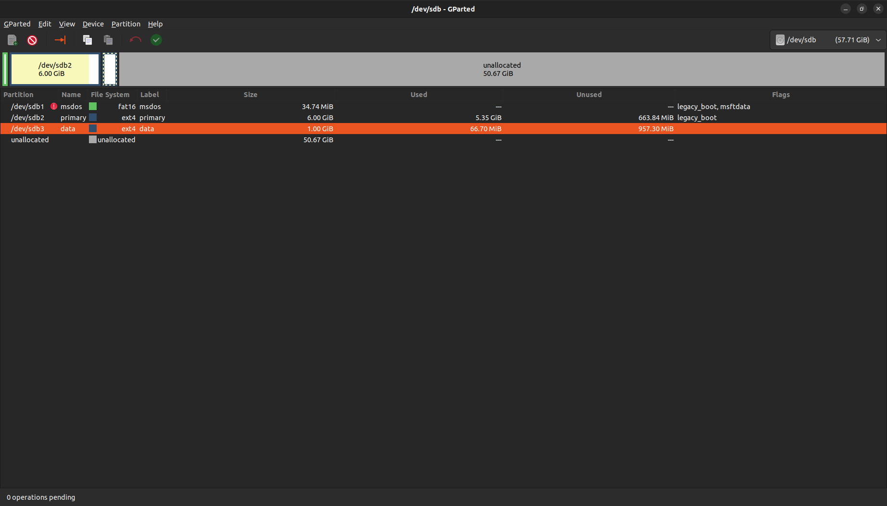
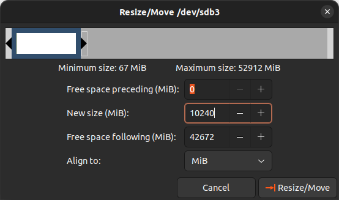
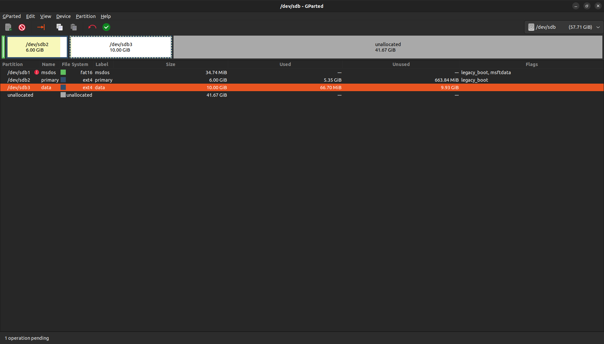
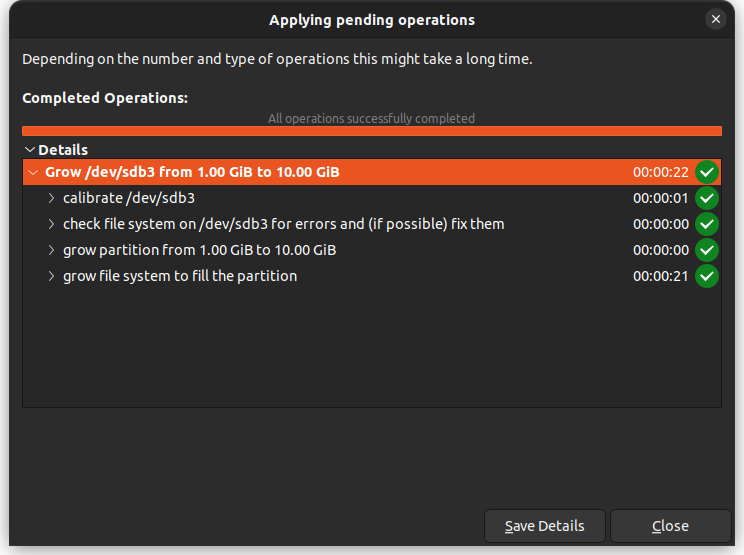
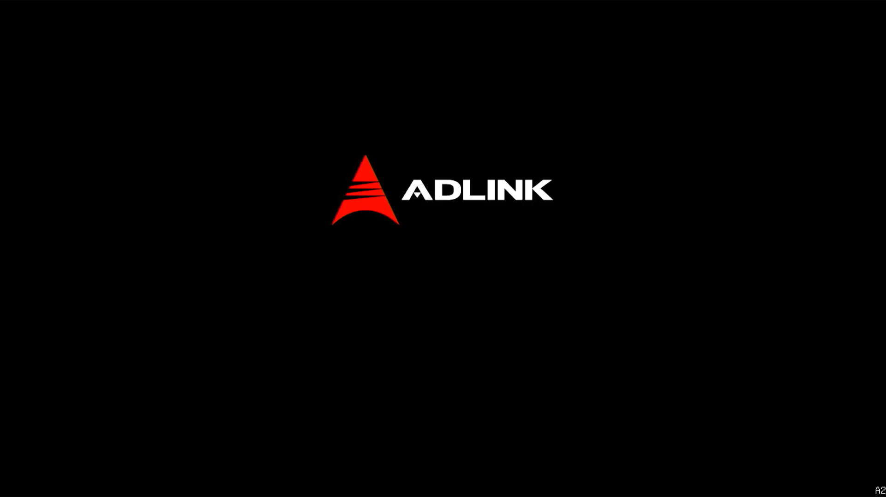
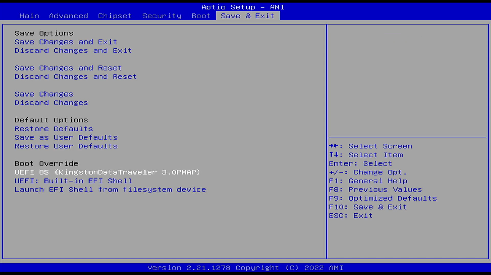
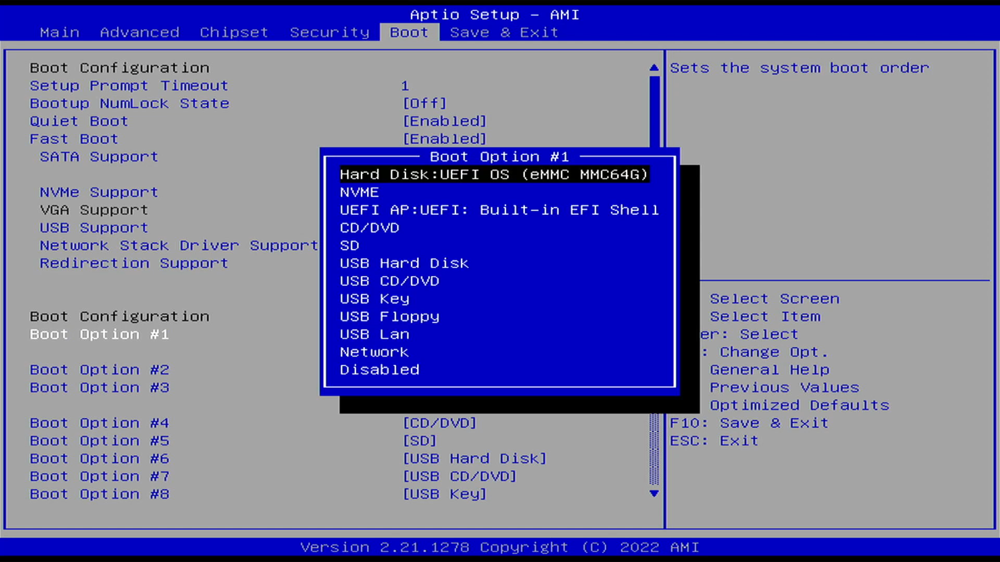

Yocto (with Intel Elkhart Lake)The following provides detailed steps on how to install Yocto image(s) on your target device using a bootable USB drive. Before you start Prepare an Linux-based host system Download the latest Yocto image from here Prepare an empty USB drive with 64 GB Prepare your USB drive1. On your Linux host device, extract the downloaded image. 2. Insert the USB drive into your host device and unmount it by executing the following command: sudo umount /dev/sd[x] 3. Go into the directory where your image file is extracted, and then flash the Yocto image into your USB drive: sudo dd if=<image_name>.wic of=/dev/sd[x] status=progress sync 4. Once completed, remove the USB drive form your host device and re-insert it. Now, you shall see 4 partitions named: msdos, primary, data, and unallocated. 5. Install Gparted tool on your host system, in order to modify the partitions size, using the following command: sudo apt install gparted 6. Open the Gparted tool. sudo gparted If you a warning, as exemplified below, click Fix to continue.  7. Select your USB drive and resize the /data partition size as shown below.  8. Resize the /data partition from 1GB to 10GB and click Resize/Move.  9. Click the Green color tick mark to process the resizing.  10. Once completed, the following Compelted Operations is displayed. Close the Gparted tool.  11. Copy the download image into /data partition using the following commands. This shall take some time. sudo cp -v <image_name>.wic /media/<user_name>/data/ sync 12. Once finished, remove your USB drive. Prepare the targeted device1. Make sure that your target device has connected all required accessories and cables such as keyboard, mouse, USB drive, network LAN, and HDMI display.2. After startup, press [ESC] on your keyboard upon seeing the ADLINK logo as exemplified below to enter the boot menu.  3. The Main section of the boot menu appears, where you can see detailed information of your device.4. In the Boot section, select and enter Boot Option #1 to set your USB drive as the first boot option. If you cannot find your USB drive in the Boot section, please check within the Boot Override section and select it to continue.  5. Now, it shall boot the Yocto image form the USB drive and log in as root. 6. To flash the Yocto image via eMMC, you can type the following commands in the terminal in sequence. This may take some time. lsblk cd /data sudo dd if=<image_name>.wic of=/dev/media/mmcblk0 status=progress sync reboot 7. Once completed, reboot your target device and change the boot option to eMMC as exemplified below.  8. Save & Exit from the boot menu and log in as a root to finish.